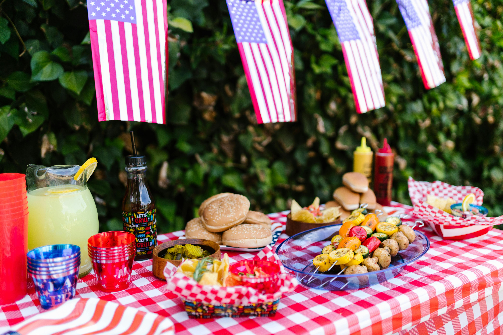

The annoyingly hot one.

Summer Overview
Summer is defined as being the warmest season of they year, between spring and autumn, summer has the summer solstice which is more commonly known as the longest day of the year. In the northern hemispher summer spans from June to the middle of September. Summer boasts a period of warmer temperatures, sunny skies, and unfortunately in some areas, high humidity.
Because of the agreeable weather, there are plenty of activities to do in the summmer. Vacations and trips abroad and domestically are popular during this time. Most amusement parks have opened for the season by the time the school year ends. There are also more music festivals and other activities, usually outdoors during this time.
Holidays
The summer months don't have too many holidays, they do have Father's Day, Independence Day, and Labor Day. This page will mostly be focusing on Independence day since it is one of the bigger holidays during the summer.
Independence Day
July 4, 1776: The United States officially declared independence from Great Britain, setting off a precedence that trigger revolutions throughout North and South America. Americans have celebrated the day since not long after the Revolutionary War, with Massachussetts beign the first state to make July 4th an official state holiday in 1781. Now every 4th of July, Americans gather with firends and family to commemerate America's founding Father's and gaining independence from Great Britain. Americans celebrate with parades, barbeques, bonfires, and fireworks. Many Americans like to dust of the old barbeque and will grill their dinner for the 4th of July because nothing screams freedom more than a hot dog.

The first time fireworks were used in an American Independance Day celebration was in Philadelphia in 1777 when ships had used their cannons for a 13 gun salute. The Sons of Liberty also used fireworks at a common in Boston the same day. Congress would go on to officially make the 4th of July a federal holiday in 1870. Despite the holiday's original intended purposes being political, the holiday remains as a representation of American patriotism.
Is Summer the best season?
No. I'm not a fan of hot weather or humidity; just a few years ago there was a heat wave back home that reached 116 degrees F at its peak, I much prefer 65F and below. Summer also brings with it fire season, and as someone from the west coast who has been through whole weeks where the sun isn't visible because the sky is covered in a layer of thick wild fire smoke turning the sky red; I would say that summer is not my favorite season. It also only has a handful of holidays, so there's isn't that much to look forward to besides school not being in session, but once I graduate, even that won't matter.